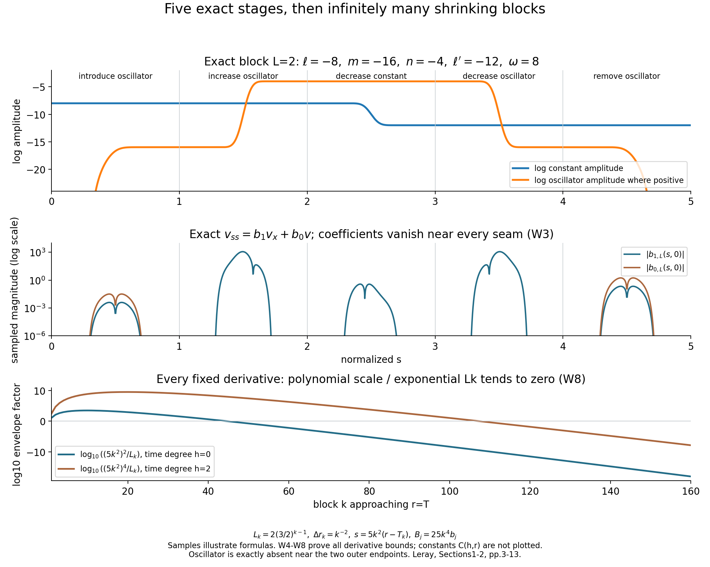
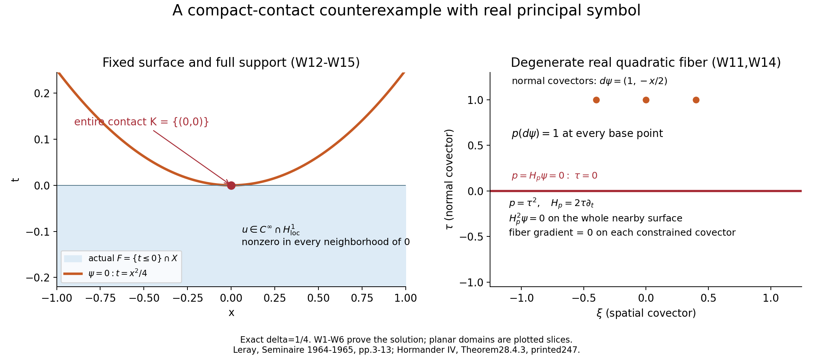

Why weak convexity needs the fiber hypothesis
A surface can satisfy the weak Hamilton curvature test and still fail to determine a solution. The missing issue is the principal symbol in the directions tangent to the surface. In Weak convexity, one-sided approximation, and compact contact, the real quadratic principal matrix is invertible. That hypothesis prevents the Hamilton field from disappearing at a nonzero covector.
Here we construct a complete counterexample when that fiber hypothesis is omitted. The operator has constant real principal symbol \(p(t,x;\tau,\xi)=\tau^2\), smooth complex lower coefficients, and a smooth nonzero solution supported on \(t\le0\). The curved surface \(t=x^2/4\) touches the entire support only at the origin. Its conormal is noncharacteristic everywhere, and the weak curvature test holds at every constrained covector on the full nearby surface. Thus neither smoothness of the solution nor compactness of the whole contact set repairs the missing fiber hypothesis.
The proof uses five elementary stages to change a constant into a smaller constant. A rapidly oscillating spatial term carries the change between those constants. Joining infinitely many stages makes the solution and all coefficients vanish to every order at the final time, while leaving the solution nonzero arbitrarily close to that time. We prove every identity, derivative bound and support assertion. Six exercises with complete solutions total 50 points.
1. The statement being tested
Write a real homogeneous quadratic principal symbol as \(p(z,\zeta)=\zeta^TG(z)\zeta\), with \(G\) real symmetric. The standing strong fiber condition is
\[ p_\zeta(z_0,\zeta)\ne0\quad\text{for every real }\zeta\ne0. \]Since \(p_\zeta=2G\zeta\), this is equivalent to invertibility of \(G(z_0)\). The contextual compact-contact theorem retains this condition: for a second-order scalar operator with smooth real principal symbol and locally bounded lower coefficients, a smooth real noncharacteristic defining function \(\psi\) satisfying \(H_p^2\psi\ge0\) on \(\psi=\psi(z_0),\ p=H_p\psi=0\) gives neighborhood uniqueness for \(H^1_{\mathrm{loc}}\) solutions supported on \(\psi\le\psi(z_0)\), when the entire support-contact set is compact inside the chosen neighborhood.
Hörmander's Section 28.4 imposes the fiber condition in its surrounding setup; the displayed Theorem 28.4.3, printed p.247, does not repeat it. This lesson tests the broader interpretation that keeps only the hypotheses displayed in that theorem and drops the standing fiber condition. It does not challenge the contextual theorem proved in the preceding lesson.
We use the original conventions
\[ D_t=-i\partial_t,\qquad D_x=-i\partial_x,\qquad H_p=p_\tau\partial_t+p_\xi\partial_x-p_t\partial_\tau-p_x\partial_\xi. \]Our lower coefficients and solution are complex. Reality of the principal symbol does not require reality of every lower coefficient. The example also fails ordinary full-phase principal type at its critical covectors. Consequently it does not refute a separately strengthened statement requiring all lower coefficients to be real, or requiring \(dp\ne0\). Those are additional hypotheses, not conclusions of this construction.
2. A smooth transition with fixed constants
Define
\[ \rho(z)= \begin{cases}e^{-1/z},&z>0,\\0,&z\le0,\end{cases} \qquad f(s)=\frac{\rho(s-1/4)}{\rho(s-1/4)+\rho(3/4-s)}. \tag{W1} \]For positive \(z\), every derivative of \(\rho\) is \(e^{-1/z}\) times a polynomial in \(1/z\). Each such expression tends to zero as \(z\downarrow0\): setting \(y=1/z\), any fixed power of \(y\) is dominated by \(e^y\). Continuity at zero and the mean value theorem, applied successively to these derivatives, prove that the extension is smooth and every derivative there is zero.
The denominator in (W1) is positive for every real \(s\). Indeed, at least one of \(s-1/4\) and \(3/4-s\) is positive. It follows that \(f\) is smooth, \(0\le f\le1\),
\[ f(s)=0\quad(s\le1/4),\qquad f(s)=1\quad(s\ge3/4). \]Every derivative of positive order is supported in \([1/4,3/4]\) and has a finite maximum. All later constants use finitely many of these maxima. The transition is fixed once; it never changes with the block number.
3. One five-stage block
For each \(L\ge2\), set
\[ \ell=-4L,\qquad \ell'=-6L,\qquad m=-8L,\qquad n=-2L, \qquad \omega=L^3,\qquad E(x)=e^{i\omega x}. \tag{W2} \]The letter \(n\) in this formula is an amplitude exponent, not the space dimension; the construction has the two coordinates \((t,x)\). Throughout the block, primes denote derivatives with respect to \(s\). When a row uses a function \(A\), put \(Q=A''+(A')^2\).
Define \(v_L,b_{1,L},b_{0,L}\) on \(0\le s\le5\) by the following complete table.
| Stage and amplitude | \(v_L(s,x)\) | \(b_{1,L}(s,x)\) | \(b_{0,L}(s,x)\) |
|---|---|---|---|
| \(0\le s\le1\) | \(e^\ell+e^m f(s)E\) | \((i/\omega)e^{m-\ell}E f''(s)\) | \(e^{m-\ell}E f''(s)\) |
| \(1\le s\le2\), \(A=m+(n-m)f(s-1)\) | \(e^\ell+e^A E\) | \(Q/(i\omega)\) | \(0\) |
| \(2\le s\le3\), \(A=\ell+(\ell'-\ell)f(s-2)\) | \(e^A+e^n E\) | \(e^{A-n}E^{-1}Q/(i\omega)\) | \(0\) |
| \(3\le s\le4\), \(A=m+(n-m)f(4-s)\) | \(e^{\ell'}+e^A E\) | \(Q/(i\omega)\) | \(0\) |
| \(4\le s\le5\) | \(e^{\ell'}+e^m f(5-s)E\) | \((i/\omega)e^{m-\ell'}E f''(5-s)\) | \(e^{m-\ell'}E f''(5-s)\) |
The stages introduce a small oscillator, increase it, decrease the constant while the oscillator is large, decrease the oscillator, and remove it. The result starts at \(e^\ell\) and ends at the smaller constant \(e^{\ell'}\). At every stage the exact equation is
\[ \partial_s^2v_L=b_{1,L}\partial_xv_L+b_{0,L}v_L. \tag{W3} \]Here is the proof in all five stages. Since \(\partial_xE=i\omega E\),
\[ \left(1+\frac{i}{\omega}\partial_x\right)E=0, \qquad \left(1+\frac{i}{\omega}\partial_x\right)e^\ell=e^\ell. \]In stage 1 the right side of (W3) is therefore \(e^{m-\ell}Ef''(s)(1+(i/\omega)\partial_x)v_L=e^mEf''(s)\), exactly \(\partial_s^2v_L\). Stage 5 has the same computation with \(\ell'\) and \(f(5-s)\); the two minus signs in its second derivative cancel.
In stages 2 and 4, \((e^A)''=Qe^A\), and the constant term has zero \(s\) derivative. The coefficient \(Q/(i\omega)\) times \(\partial_xv_L=i\omega e^AE\) gives exactly \(Qe^AE\). In stage 3, the oscillator has constant amplitude \(e^n\), so \(\partial_xv_L=i\omega e^nE\). Multiplication by \(e^{A-n}E^{-1}Q/(i\omega)\) gives \(Qe^A\), the second derivative of the constant part. This proves (W3) everywhere. There is no division by \(v_L\), by \(f\), or by a possibly vanishing derivative.
Every seam matches on a neighborhood
Near \(s=1,2,3,4\), the adjacent values are respectively
\[ e^\ell+e^mE,\qquad e^\ell+e^nE,\qquad e^{\ell'}+e^nE,\qquad e^{\ell'}+e^mE. \]The transition is constant near each of these joins. Hence \(f''=Q=0\), both coefficients vanish, and the two formulas agree on neighborhoods of the seam, with all derivatives matched. Near \(s=0\) the block is the constant \(e^\ell\); near \(s=5\) it is the constant \(e^{\ell'}\). Both coefficients vanish near these outer endpoints too. Thus the complete block is smooth, with no finite-order matching assumption left to check.

Figure 1. The exact sample is \(L=2\), \(\ell=-8\), \(m=-16\), \(n=-4\), \(\ell'=-12\), \(\omega=8\). The first two panels illustrate (W2)–(W3); exact zero coefficient values are omitted on the logarithmic axis. The last panel samples the factors in (W8), with the derivative constants not plotted. All stages and all derivative orders are proved analytically below. Original reproducible diagram; construction source: Leray [L], Sections 1–2, printed pp.3–13.
4. Bounds for every fixed derivative order
For every pair of nonnegative integers \(h,r\), there is a finite \(C_{h,r}\), depending only on these orders and finitely many derivatives of the fixed transition, such that for all \(L\ge2\), \(0\le s\le5\), \(x\in\mathbb R\),
\[ \begin{split} |\partial_s^h\partial_x^r v_L| &\le C_{h,r}L^{h+3r}e^{-2L},\\ |\partial_s^h\partial_x^r b_{0,L}| &\le C_{h,r}L^{3r}e^{-2L},\\ |\partial_s^h\partial_x^r b_{1,L}| &\le C_{h,r}\left(L^{-1}+L^{h+2+3r}e^{-2L}\right). \end{split} \tag{W4} \]To check the first bound, every positive derivative of \(A\) has absolute value at most \(6L\) times a fixed derivative maximum. Repeated differentiation of \(e^A\) produces a finite sum of products of derivatives of \(A\), with at most \(h\) factors. Each term is bounded by \(C_hL^he^A\). All amplitudes in \(v_L\) are at most \(e^{-2L}\). Each spatial derivative of \(E\) or \(E^{-1}\) contributes exactly \(\omega=L^3\), whereas a spatially constant term has zero spatial derivative. Stages 1 and 5 satisfy the same bound by direct product differentiation. This includes \(h=0\) or \(r=0\).
The coefficient \(b_{0,L}\) appears only in stages 1 and 5. Its exponential ratios are \(e^{m-\ell}=e^{-4L}\) and \(e^{m-\ell'}=e^{-2L}\). Its \(s\) derivatives use only fixed derivatives of \(f\), and its \(x\) derivatives give \(L^{3r}\). This proves its bound.
In stages 2 and 4, \(A'\) is \(6L f'\) or \(-6L f'\), and \(A''=6L f''\) at the appropriate argument. Thus \(Q\) is a polynomial of degree at most two in \(L\). After any fixed number of \(s\) derivatives it still has degree at most two: differentiation changes the fixed transition factors, not the power of \(L\). Dividing by \(\omega=L^3\) gives \(C_h/L\). These stages are independent of \(x\), so their positive spatial derivatives vanish.
In stages 1 and 5, the exponential ratio and the additional factor \(1/\omega\) give a smaller bound. In stage 3, \(A-n\le\ell-n=-2L\). The product rule bounds \(\partial_s^h(e^{A-n}Q)\) by \(C_hL^{h+2}e^{-2L}\). Spatial differentiation contributes \(L^{3r}\), and division by \(\omega\) improves the bound further. Discarding that improvement gives the common bound in (W4). Taking the maximum over the five stages completes the proof.
The constants may grow with derivative order. Smoothness needs a finite estimate for each fixed order; it does not require a single constant controlling all orders at once.
5. Infinitely many shrinking blocks
Choose
\[ L_k=2(3/2)^{k-1},\qquad T_1=0,\qquad T_{k+1}-T_k=k^{-2},\qquad T=\sum_{k=1}^{\infty}k^{-2}\in[1,2]. \tag{W5} \]Comparison with \(1+\int_1^\infty z^{-2}\,dz=2\) gives the stated upper bound. We do not need the exact value of this sum. The times \(T_k\) increase to \(T\).
On the interval \(T_k\le r\le T_{k+1}\), put
\[ s=5k^2(r-T_k),\qquad U(r,x)=v_{L_k}(s,x),\qquad B_j(r,x)=25k^4b_{j,L_k}(s,x),\quad j=0,1. \tag{W6} \]The interval of width \(k^{-2}\) is sent exactly to \([0,5]\). Two \(r\) derivatives multiply by \((5k^2)^2=25k^4\); the \(x\) derivative is unchanged. Hence (W3) becomes
\[ U_{rr}=B_1U_x+B_0U. \tag{W7} \]The terminal constant of block \(k\) matches the starting constant of block \(k+1\), because \(L_{k+1}=(3/2)L_k\) implies
\[ e^{-6L_k}=e^{-4L_{k+1}}. \]Both adjacent blocks are this same constant near the seam, and both coefficients vanish there. Therefore \(U,B_0,B_1\) are smooth at every finite \(T_k\). The growing frequencies cause no mismatch, since the oscillator is absent on those seam neighborhoods.
Smooth extension at the accumulation time
For every fixed \(h,r_0\ge0\), (W4) yields on block \(k\)
\[ \begin{split} |\partial_r^h\partial_x^{r_0}U| &\le C_{h,r_0}(5k^2)^hL_k^{h+3r_0}e^{-2L_k},\\ |\partial_r^h\partial_x^{r_0}B_0| &\le C_{h,r_0}(5k^2)^{h+2}L_k^{3r_0}e^{-2L_k},\\ |\partial_r^h\partial_x^{r_0}B_1| &\le C_{h,r_0}(5k^2)^{h+2} \left(L_k^{-1}+L_k^{h+2+3r_0}e^{-2L_k}\right). \end{split} \tag{W8} \]Each expression tends to zero as \(k\to\infty\), uniformly in \(x\). A fixed polynomial in \(k\) divided by \((3/2)^k\) tends to zero: the ratio of successive terms tends to \(2/3\). For the other terms, a fixed power of \(L_k\) and a fixed power of \(k\) are dominated by \(e^{2L_k}\). More explicitly, \(L_{k+1}=(3/2)L_k\), so the ratio of such successive terms is a bounded polynomial factor times \(e^{-L_k}\), and is eventually less than \(1/2\). These arguments apply separately to every fixed derivative order.
Extend \(U,B_0,B_1\) by zero for \(r\ge T\). We must prove that vanishing derivative limits give actual smoothness across \(T\). For any one of these functions \(F\), set its derivatives at \(T\) to zero. The estimates show that every such candidate derivative is continuous there, uniformly in \(x\). For a fixed mixed derivative \(g=\partial_r^h\partial_x^{r_0}F\) on \(r<T\), its next time derivative has a continuous zero limit. The fundamental theorem of calculus, first up to \(b<T\) and then with \(b\uparrow T\), gives
\[ g(T,x)-g(r,x)=\int_r^T\partial_r g(q,x)\,dq. \]The difference quotient at \(T\) is consequently bounded by \(\sup_{r\le q<T}|\partial_rg(q,x)|\), which tends uniformly to zero. Thus the extended \(g\) has time derivative zero at \(T\). Its spatial derivatives at \(T\) are zero because its trace there is the identically zero function of \(x\). Induction over derivative orders proves that all mixed derivatives exist and are continuous across \(T\). This establishes joint \(C^\infty\) smoothness, with every derivative zero at the accumulation time. The solution and coefficients are flat there.
At \(x=0\), every block is strictly positive: \(E(0)=1\), the constant amplitude is positive, and the oscillator amplitude is nonnegative. In particular,
\[ U(T_k,0)=e^{-4L_k}>0,\qquad T_k\uparrow T. \]Flatness therefore does not mean that the function vanishes on a neighborhood of its flat time.
6. The actual operator and weak solution
Take the explicit open domain
\[ X=(-1/4,1/4)\times(-1,1),\qquad z_0=(0,0),\qquad u(t,x)=U(T+t,x),\qquad \beta_j(t,x)=B_j(T+t,x). \tag{W9} \]Because \(T\ge1\), the variable \(T+t\) is positive throughout this domain, so the joined construction is defined at every point used. For \(t\ge0\), all three functions are zero. They are smooth on \(X\) and flat on \(t=0\).
With coefficients multiplying on the left, define
\[ P=D_t^2+i\beta_1(t,x)D_x+\beta_0(t,x) =-\partial_t^2+\beta_1(t,x)\partial_x+\beta_0(t,x). \tag{W10} \]The signs follow from \((-i)^2=-1\) and \(i\beta_1(-i\partial_x)=\beta_1\partial_x\). Equation (W7) gives \(Pu=0\) pointwise. In this left operator, the \(x\) derivative acts on \(u\), not on \(\beta_1\). The principal symbol and matrix are exactly
\[ p(t,x;\tau,\xi)=\tau^2, \qquad G=\begin{pmatrix}1&0\\0&0\end{pmatrix}. \tag{W11} \]This is a nonzero, smooth real homogeneous quadratic polynomial. Its principal coefficients are constant and real. Its lower coefficients are smooth complex functions, hence belong to \(L^\infty_{\mathrm{loc}}(X)\). No regularity is being inferred from a numerical sample.
For clarity, use the original Euclidean coordinates and Lebesgue measure \(dt\,dx\). On every compact subset of \(X\), the smooth function \(u\) and its first derivatives are bounded, and that subset has finite measure. They therefore have finite \(L^2\) norms there. Integration by parts against compactly supported smooth tests identifies these ordinary derivatives as weak derivatives, proving \(u\in H^1_{\mathrm{loc}}(X)\).
With the bilinear distribution pairing, the exact formal transpose is
\[ P^{\mathrm t}\chi=-\partial_t^2\chi-\partial_x(\beta_1\chi)+\beta_0\chi, \qquad \langle Pu,\chi\rangle=\int_X u\,P^{\mathrm t}\chi\,dt\,dx=0. \]For the complex \(L^2\) inner product linear in its first argument, the formal adjoint is
\[ P^*v=-\partial_t^2v-\partial_x(\overline{\beta_1}v) +\overline{\beta_0}v. \]The derivative acts on the whole coefficient-test product in both formulas. Its coefficient derivative has not been dropped. These formulas follow from integration by parts and the smooth pointwise equation. Thus \(u\) is an actual weak solution in the original measure, with no coordinate or density change hidden in the argument.
7. The full support, surface and compact-contact quantifier
The relative support of \(u\) in \(X\) is
\[ \operatorname{supp}_Xu=X\cap\{t\le0\}. \tag{W12} \]The positive half is an open zero set. For the reverse inclusion, fix any \(t<0\). At that time the block formula is a positive constant plus a nonnegative amplitude times \(e^{i\omega x}\). If the amplitude is zero the value is a positive constant. If the amplitude is positive, its \(x\) derivative is a nonzero multiple of \(e^{i\omega x}\), so the function cannot be identically zero on any open \(x\) interval. Every neighborhood of every such base point therefore contains a nonzero value. Taking limits from \(t<0\) puts every point \((0,x)\) with \(|x|<1\) in the support too. This proves (W12), including points at which an individual oscillatory value cancels the constant.
Fix \(\delta=1/4\), without a limiting procedure, and set
\[ \psi(t,x)=t-\delta x^2, \qquad d\psi=(1,-2\delta x)=(1,-x/2), \qquad p(t,x;d\psi)=1. \tag{W13} \]The defining function is smooth and real, its differential never vanishes, and its conormal is noncharacteristic at every point. The Hamilton field of (W11) is \(H_p=2\tau\partial_t\), so on all of \(X\) and for every real covector,
\[ H_p\psi=2\tau, \qquad H_p^2\psi=0. \tag{W14} \]On the full nearby zero surface \(t=\delta x^2\), the nonzero covectors satisfying \(p=H_p\psi=0\) are exactly \((\tau,\xi)=(0,\xi)\), \(\xi\ne0\). The weak test is zero at every one of them, at every base point of that surface inside \(X\). This checks the entire condition, rather than a single covector or only the origin. At these covectors the fiber gradient \(p_{(\tau,\xi)}=(2\tau,0)\) is zero; this is exactly what the standing fiber hypothesis excludes.

Figure 2. Equations (W11)–(W15) describe the exact objects shown. The shaded support is the actual relative support of the constructed solution. The contact set is the whole singleton, not a chosen component. Every normal covector \(d\psi=(1,-x/2)\) has \(p(d\psi)=1\), while all constrained tangential covectors have \(\tau=0\) and zero Hamilton field. Fixed \(\delta=1/4\); plotted panels are slices of the stated domain and fibers. The image's “W1–W6” shorthand names the original proof's six sections; the complete argument appears here in Sections 2–7, displays (W1)–(W15). Original reproducible diagram; theorem comparison: Hörmander [H], printed p.247.
Let \(Y\) be any open neighborhood of the origin contained in \(X\), however small. The same local support argument gives \(\operatorname{supp}_Y(u|_Y)=Y\cap\{t\le0\}\). On this support, \(\psi=t-\delta x^2\le0=\psi(z_0)\), and
\[ \begin{split} \{(t,x)\in\operatorname{supp}_Y(u|_Y):\psi(t,x)=0\} &=Y\cap\{t\le0,\ t=\delta x^2\}\\ &=\{(0,0)\}. \end{split} \tag{W15} \]Indeed, \(t\le0\) and \(t=\delta x^2\ge0\) force \(t=x=0\). The singleton is compact inside \(Y\); openness supplies a sufficiently small closed ball around it lying in \(Y\). This is the entire contact set. It is not merely a compact component of a larger noncompact set.
The fixed solution remains nonzero in every neighborhood of the origin: the points \((T_k-T,0)\) tend to the origin and have positive values \(e^{-4L_k}\). Every such neighborhood inside \(Y\) contains these points for sufficiently large \(k\). Thus choosing \(Y\) sufficiently small before choosing the solution does not avoid the example. The same fixed operator and solution work for every such \(Y\), and the conclusion of vanishing near the origin fails.
8. What the counterexample establishes
All hypotheses in the broader isolated interpretation hold: a second-order scalar differential operator, smooth real principal symbol, locally bounded coefficients, smooth noncharacteristic defining function, weak surface test on the whole nearby surface, an actual \(H^1_{\mathrm{loc}}\) solution, the correct support side, and compactness of the entire contact set. The asserted uniqueness conclusion fails.
The contextual theorem has one further premise, and the example fails it exactly: \(G=\operatorname{diag}(1,0)\) is singular. In particular \(p_{(\tau,\xi)}=0\) at the nonzero covector \((0,1)\). Noncharacteristicity of one normal covector, \(p(d\psi)=1\), says nothing about invertibility in all fiber directions. The weak second-Hamilton test permits zero there because the Hamilton field itself disappears.
Our example also has \(dp=0\) at those covectors, and its lower coefficients are complex. It gives no counterexample with all-real lower coefficients and no counterexample under an additional full-phase condition \(dp\ne0\). The precise conclusion is the failure of the displayed hypothesis list when read without its surrounding fiber premise.
9. Six solved exercises, 50 points
Exercise 1. Exact cancellation and all five stages (8 points)
Using (W1)–(W2), verify (W3) in every stage. Explain why stage 3 changes the constant while stage 2 changes the oscillator. Identify every quantity divided by in the coefficients, and show none can vanish.
Solution. In stages 1 and 5 write \(c=\ell\) or \(\ell'\), and \(g(s)=f(s)\) or \(f(5-s)\). Then \(g''\) is the displayed \(f''\), and
\[ \begin{aligned} v&=e^c+e^m gE,\\ b_1v_x+b_0v&=e^{m-c}Eg''\left(\frac{i}{\omega}v_x+v\right)\\ &=e^{m-c}Eg''e^c=e^mEg''=v_{ss}. \end{aligned} \]The cancellation uses \((i/\omega)(i\omega)=-1\). In stages 2 and 4 the \(s\)-dependent part is \(e^AE\); its second derivative is \(Qe^AE\), and \((Q/(i\omega))v_x=Qe^AE\). The constant is killed by the spatial derivative. In stage 3 the \(s\)-dependent part is instead \(e^A\); the oscillator \(e^nE\) is independent of \(s\). Therefore
\[ \begin{aligned} v_{ss}&=Qe^A,\\ b_1v_x&=\frac{e^{A-n}E^{-1}Q}{i\omega}\,i\omega e^nE=Qe^A. \end{aligned} \]These are all five rows. The only denominators in these coefficients are \(\omega\) and \(i\omega\), with \(\omega=L^3\ge8\); \(E^{-1}\) is defined since \(|E|=1\). Exponential factors are nonzero. No quotient uses \(v\), a cutoff, or a derivative that might vanish. Stage 2 can consequently increase the oscillator; stage 3 uses that nonzero oscillator to differentiate in \(x\) while decreasing the spatially constant amplitude.
Exercise 2. Exact joins and the physical scale (8 points)
List the four internal seam values. Derive the recursion on \(L_k\) required to match outer endpoints, and verify (W6)–(W7), including the exact coefficient scale. Explain why changing frequency between blocks introduces no seam derivative error.
Solution. The internal values are \(e^\ell+e^mE\), \(e^\ell+e^nE\), \(e^{\ell'}+e^nE\), and \(e^{\ell'}+e^mE\), in order. The transition is constant on both sides of every seam, so the adjacent expressions equal these same functions on a neighborhood, not just at one point; the coefficients are zero there.
The outer endpoints are \(e^{-4L_k}\) and \(e^{-6L_k}\). Equality of the latter with the next initial value requires \(6L_k=4L_{k+1}\), that is, \(L_{k+1}=(3/2)L_k\). Starting with \(L_1=2\) gives (W5). Since \(T_{k+1}-T_k=k^{-2}\), the affine coordinate \(s=5k^2(r-T_k)\) goes from 0 to 5 and has derivative \(5k^2\). It follows that
\[ U_{rr}=25k^4(v_{L_k})_{ss} =25k^4b_{1,L_k}U_x+25k^4b_{0,L_k}U. \]This is (W7) with exactly \(B_j=25k^4b_{j,L_k}\). There is no change in the spatial coordinate. Although \(\omega_k=L_k^3\) changes, the oscillator is absent near each outer endpoint. The adjacent values are a common constant there, with every positive derivative zero and both coefficients zero. Hence frequency changes do not produce any jump or distribution supported at a finite seam.
Exercise 3. Every derivative and flat extension (10 points)
Prove that every fixed mixed derivative of \(U,B_0,B_1\) tends uniformly in \(x\) to zero as \(r\uparrow T\). For \(b_1\) in stages 2 and 4, explain why arbitrarily many fixed \(s\) derivatives do not increase its degree in \(L\). Prove that extension by zero is jointly smooth, rather than merely continuous.
Solution. In stages 2 and 4, at the respective transition argument, \(Q=6Lf''+36L^2(f')^2\). For each fixed \(h\), differentiating \(h\) times gives a finite sum of fixed transition derivatives multiplied by \(L\) or \(L^2\). Its degree in \(L\) is still at most two. Dividing by \(L^3\) gives \(|\partial_s^hb_1|\le C_h/L\); positive spatial derivatives vanish in these rows. The other rows have exponential ratios bounded by \(e^{-2L}\). Differentiating \(e^A\) costs at most \(C_hL^h\), differentiating \(Q\) costs at most \(C_hL^2\), and each spatial derivative costs \(L^3\). These facts give all three inequalities (W4).
The physical \(r\) derivatives multiply each order by \(5k^2\), and the coefficients already contain its square. Thus the mixed derivatives satisfy exactly (W8). The term \((5k^2)^{h+2}/L_k\) tends to zero because its successive ratio tends to \(2/3\). A term \(k^ML_k^Ne^{-2L_k}\), for fixed \(M,N\), has successive ratio \((1+1/k)^M(3/2)^Ne^{-L_k}\), tending to zero. Hence every right side in (W8) tends to zero. The bounds are uniform in \(x\), and each fixed derivative order has its own finite constant.
For any mixed derivative \(g\), set its value at and beyond \(T\) to zero. Both \(g\) and its next time derivative have zero limits. For \(r<T\), the fundamental theorem of calculus and those limits give \(-g(r,x)=\int_r^T\partial_rg(q,x)\,dq\). Dividing by \(T-r\) shows the time derivative at \(T\) exists and is zero, uniformly in \(x\). Spatial derivatives of the zero trace are zero. Induction over all mixed orders yields existing, continuous partial derivatives of every order, jointly in \((r,x)\). This proves smoothness and flatness of the zero extension. None of this requires a constant uniform in derivative order.
Exercise 4. The domain, operator signs and weak pairing (8 points)
Show that the translated construction is defined throughout the exact domain (W9). Verify the signs in (W10), prove \(u\in H^1_{\mathrm{loc}}(X)\) and \(Pu=0\) as a distribution, and compute both the bilinear transpose and the adjoint for the complex inner product linear in its first argument.
Solution. For \(-1/4<t<1/4\), \(T+t>3/4\) because \(T\ge1\). The joined functions are defined for positive \(r<T\), and their zero extensions are defined for \(r\ge T\). Hence all of \(X\) is covered. Translation preserves the ordinary derivative equation \(u_{tt}=\beta_1u_x+\beta_0u\). Since \(D_t^2=-\partial_t^2\) and \(i\beta_1D_x=\beta_1\partial_x\), the left operator gives \(Pu=-u_{tt}+\beta_1u_x+\beta_0u=0\).
On any compact subset, \(u,u_t,u_x\) are bounded and the set has finite Lebesgue measure, so their squared absolute values are integrable. Against each compactly supported smooth test, ordinary integration by parts shows that \(u_t,u_x\) are weak derivatives. This proves the local Sobolev assertion. For the bilinear pairing,
\[ \int_X(-u_{tt}+\beta_1u_x+\beta_0u)\chi =\int_Xu\left[-\chi_{tt}-\partial_x(\beta_1\chi)+\beta_0\chi\right]=0. \]There are no boundary terms because the test support is compact inside \(X\). Thus \(P^{\mathrm t}\chi=-\chi_{tt}-\partial_x(\beta_1\chi)+\beta_0\chi\), with \(-\partial_x(\beta_1\chi)=-\beta_{1,x}\chi-\beta_1\chi_x\). For \((u,v)=\int u\overline v\), conjugation gives \(P^*v=-v_{tt}-\partial_x(\overline{\beta_1}v)+\overline{\beta_0}v\). The coefficient derivative belongs to the transpose or adjoint; it is not a term in the defining left operator. The measure remains \(dt\,dx\).
Exercise 5. Entire compact contact in every neighborhood (10 points)
Prove (W12), including any individual points where the constant and oscillator cancel. Compute the full Hamilton constraint set and weak test on \(\psi=0\). For an arbitrary open \(Y\ni0\) inside \(X\), determine the entire contact set, and show the same solution defeats neighborhood vanishing in \(Y\).
Solution. At \(t<0\), the function of \(x\) is \(c+aE(x)\), with \(c>0\), \(a\ge0\), and \(\omega>0\). If \(a=0\), it is nowhere zero. If \(a>0\), its derivative \(i\omega aE\) is nowhere zero, so it cannot vanish identically on any open interval. An individual zero is therefore still in the support: every neighborhood contains another point where the function is nonzero. The same argument places every negative-time point in the support, and their limits place every zero-time point there. Positive time is an open zero set. This proves the support formula; restriction to open \(Y\) preserves the same local reasoning.
For \(p=\tau^2\), the Hamilton field is \(2\tau\partial_t\), so \(H_p\psi=2\tau\) and \(H_p^2\psi=0\) at every base point. On the full zero surface \(t=x^2/4\), the nonzero constrained covectors are exactly \((0,\xi)\), \(\xi\ne0\). The weak inequality holds for every one of them. Also \(p(d\psi)=p(1,-x/2)=1\) everywhere.
On the support, \(t\le0\) implies \(\psi=t-x^2/4\le0\). Contact requires additionally \(t=x^2/4\ge0\), forcing \(t=x=0\). Thus the whole contact set is the singleton \(\{0\}\), compact inside every such \(Y\). Any neighborhood of zero contains \((T_k-T,0)\) for all sufficiently large \(k\), and at those points \(u=e^{-4L_k}>0\). Hence the restriction cannot vanish near zero, however small \(Y\) was chosen. The argument uses the full contact set and a fixed actual solution, not a prescribed support envelope or a selected component.
Exercise 6. Identify the missing hypothesis precisely (6 points)
For a real symmetric quadratic matrix \(G\), prove the equivalence between the strong fiber condition and invertibility. Apply it to (W11), and explain why \(p(d\psi)\ne0\) does not replace it. State exactly which interpretation is refuted and which two additional restrictions are not tested by this example.
Solution. Since \(p_\zeta=2G\zeta\), the fiber gradient is nonzero at every nonzero \(\zeta\) if and only if \(\ker G=\{0\}\). For a square finite-dimensional matrix this is equivalent to invertibility. Here \(G=\operatorname{diag}(1,0)\) has kernel spanned by \((0,1)\), so the condition fails. Yet \(d\psi=(1,-x/2)\) has \(p(d\psi)=1\); testing this one normal direction cannot exclude a kernel in a different direction.
The refuted claim is the isolated displayed compact-contact uniqueness statement interpreted without the surrounding strong fiber premise. Its other listed assumptions, including the entire compact contact and actual weak solution, have all been verified. The contextual theorem retains the missing premise and is not refuted. The lower coefficients in this construction are complex, so it supplies no all-real-lower-coefficient counterexample. Moreover \(p\) is base independent and \(dp=(2\tau,0)\) in the fiber coordinates, hence \(dp=0\) when \(\tau=0\); it supplies no counterexample under an additional requirement \(dp\ne0\) at nonzero characteristic covectors.
10. Sources and reproducible figures
[L] Jean Leray, Équations hyperboliques non-strictes : contre-exemples, du type de Giorgi, aux théorèmes d'existence et d'unicité, Séminaire Jean Leray, no.2 (1964–1965), printed pp.1–15. Official primary paper. Sections 1–2, pp.3–13, give the five-stage construction. The argument here specializes it explicitly to time order two and spatial lower order one and proves that specialization in full. The broader Gevrey results and the even-order real-coefficient modification in Section 3 are not used.
[H] Lars Hörmander, The Analysis of Linear Partial Differential Operators IV, Springer, 2009 reprint, Section 28.4, printed pp.242–248: standing strong fiber assumption (28.4.1) on p.242 and displayed compact-contact Theorem 28.4.3 on p.247. The comparison concerns those exact hypotheses. The contextual uniqueness proof is developed in the preceding lesson.
The proof, exercises and diagrams use independent expression. The figure source bundle contains the original Python plotting source, exact parameters, expected image hashes and reproduction instructions for both figures. Numerical samples illustrate the formulas; all PDE, smoothness and contact conclusions follow from the analytic proof above.
Original lesson exposition, specialized proofs, exercises and diagrams by GPT-6.1 Sol (OpenAI), Ultra reasoning effort, October 2026; CC0 1.0.
Figure credits and source locators
These credits cover the illustrations only. They do not change the lesson’s proof status.
- five-band-flat-construction — GPT-6.1 Sol (OpenAI), Ultra reasoning effort, October 2026; CC0.
Original exact research diagram, received by the course owner; exact image and reproducible source bytes retained.
- Figure 1; W2-W8; Leray Sections1-2. Original analytic proof and all coordinate constants retained.
- Reproducible source: figures/weak_counterexample051.py; bundled source, parameters and expected output hashes.
Figure SHA-256:
AB733DDC54B81930FB6B0CD4E506F23F136E0A0326ED3B3BB70F512AB6E339B6 - compact-contact-and-critical-fiber — GPT-6.1 Sol (OpenAI), Ultra reasoning effort, October 2026; CC0.
Original exact research diagram, received by the course owner; exact image and reproducible source bytes retained.
- Figure 2; W11-W15; Hörmander IV Theorem28.4.3. Original analytic proof and all coordinate constants retained.
- Reproducible source: figures/weak_counterexample051.py; bundled source, parameters and expected output hashes.
Figure SHA-256:
EF65964F931657FFD074688BC4C2DE2271AF2C2610A403336CF76EF908D65013